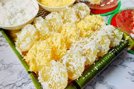
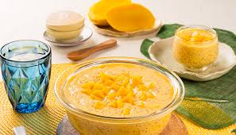

🌸 swetie kusina 🌸
LovelyLadle
Appetizers
Lumpiang Shanghai
🛒
- 500g ground pork, minced carrots, & onions
- 2 tbsp soy sauce, salt, & pepper
- Lumpia wrappers & 1 beaten egg
👨🍳 Step-by-Step Procedure
- In a bowl, mix ground pork, carrots, onions, and seasonings until well combined.
- Lay a wrapper flat, put 1 tbsp of meat, and roll tightly. Seal edges with egg wash.
- Heat oil in a pan and deep-fry rolls until golden brown and crispy.
chicken curry
🛒 Ingredients
- Protein: 2-3 lbs chicken (bone-in or thighs), cut into pieces
- Vegetables: 2 medium potatoes (quartered), 2 large carrots (cubed), 1 green/red bell pepper (cubed), 1 onion, 3-4 cloves garlic (minced), 1 thumb-sized ginger (julienned)
- Sauce/Flavor: 1-2 cups coconut milk, 1 cup water/stock, 2-3 tbsp curry powder, 1-2 tbsp fish sauce (patis), 1 chicken cube (optional)
- Cooking Oil: 3-4 tbsp
👨🍳 Step-by-Step Procedure
- Prepare the Chicken: Marinate chicken with 1 tbsp curry powder, salt, and pepper for 15 minutes
- Fry Vegetables & Chicken: Heat oil and fry potatoes and carrots until lightly browned, then set aside. In the same pan, sear the chicken pieces until light brown (about 2 mins per side), then remove.
- Sauté Aromatics: In the same pan, sauté onion, garlic, and ginger until fragrant and soft
- Simmer: Return the chicken to the pot. Add fish sauce, coconut milk, remaining curry powder, and water/stock. Bring to a boil, then cover and simmer on low heat for 20-30 minutes, or until the chicken is tender
- Add Veggies & Finish: Add the fried potatoes, carrots, and bell peppers. Simmer for another 5-10 minutes until the vegetables are cooked through and the sauce has thickened
- Serve: Season with extra fish sauce, salt, or pepper if needed. Serve hot with rice.
Main Course
Chicken afritada
🛒 Ingredients
- 1kg chicken (cut into serving pieces).
- Vegetables:2 Potato,1 Carrot,1 red Bell Pepper,1/2 cup green Peas.
- Sause:1 cup Tomato Sauce,1 cup Chicken
.
👨🍳 Step-by-Step Procedure
- Sauté garlic and chicken until lightly browned.
- Add soy sauce, water, and spices. Simmer until chicken is tender.
- Pour in vinegar and let it boil without stirring for 2 minutes.
Chicken Adobo
🛒 Ingredients
- Chicken pieces, soy sauce, vinegar, garlic, peppercorns, laurel leaves.
👨🍳 Step-by-Step Procedure
- brown Vegetables: Fry cubed potatoes and carrot in oil until the edges are golden;remove and set aside to keep them firm.
- Sear chicken:in the same pan,brown the chicken pieces on all sides to lock in them flavor.
- Simmer: Add the tomato sauce and chicken broth.cover and simmer from 15-20 minutes until the chicken is tender and the sauce has thickened.
Desserts
pichi pichi

🛒 Ingredients
- 2 cups grated cassava (fresh or frozen, thawed)
- 1 cup sugar (white or brown)
- 2 cups water (or coconut water)
- 1 tsp pandan extract (optional, for aroma)
- Grated coconut for coating
- Food coloring (optional, for a vibrant look)
👨🍳 Step-by-Step Procedure
- Mix Base: In a bowl, combine grated cassava, sugar, and water. Mix thoroughly until the sugar dissolves.
- Add pandan extract and food coloring (if using) and mix well
- Shape into small balls and coat with grated coconut.
mango tapioca

🛒 Ingredients
- Cassava Root (Starch): The primary, essential ingredient derived from the tuber of the cassava plant.
- Tapioca Pearls/Sago: Made from cassava starch, water, and sometimes coloring agents (for boba).
- Water: Used to cook the tapioca pearls and create the base for the dessert.
- Sugar: Sweetens the dessert, often added to the water or coconut milk base.
- Coconut Milk: Adds richness and creaminess to the dessert, often used as a
- Flavorings: Optional ingredients like pandan extract, vanilla, or fruit purees (e.g., mango) to enhance the taste.
👨🍳 Step-by-Step Procedure
- Cook the Tapioca Pearls: Bring 1.5 liters of water to a boil in a pot. Add 1 cup of tapioca pearls. Stir constantly to prevent sticking. Cook for 15-20 minutes, or until the pearls are mostly translucent with a small white dot in the center.
- Rinse the Pearls: Drain the cooked pearls and rinse thoroughly with cold water to remove excess starch, ensuring they do not stick together. Set aside.
- Prepare the Cream Mixture: In a large bowl, mix the all-purpose cream, condensed milk, and evaporated milk.
- Combine Ingredients: Add the cooked, cooled tapioca pearls and half of the diced mangoes into the cream mixture. Mix well.
Chill and Serve: Add the remaining diced mangoes on top. Refrigerate for at least 1-3 hours until cold. Serve chilled and enjoy!
- Optional Enhancements: Add nata de coco or coconut flakes for extra texture.
li
Contact Us
You sent
About sweetie kusina
Kusina PH is dedicated to delivering an exceptional dining experience that showcases the true essence of Filipino cuisine.
Mission
To honor and promote Filipino culture and traditions by creating a welcoming environment.
Vision
To be the premier destination for authentic Filipino cuisine, celebrated for preserving and sharing the rich culinary traditions of the Philippines.